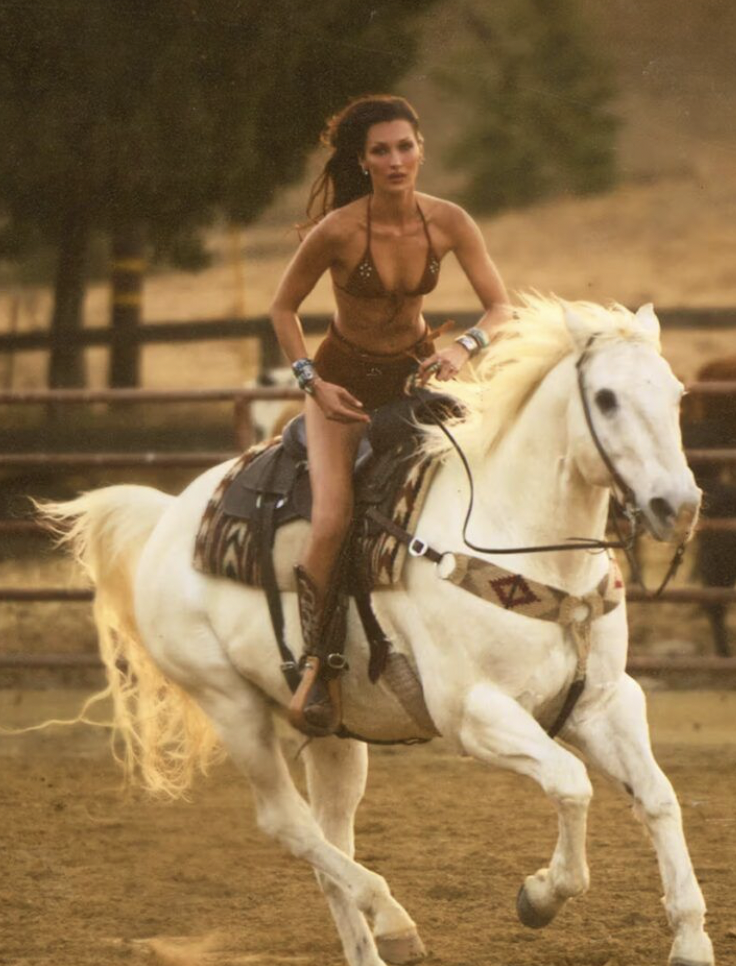

Il ne suffit pas d’enfiler des santiags ou de coiffer un chapeau de cowboy : pour adopter le style western, il est essentiel d’en comprendre les origines. Avant d’envahir nos garde-robes et de faire sensation sur les podiums, le western a une histoire. Le western est né au XIXᵉ siècle, avec l’expansion vers l’Ouest des États-Unis. Les vêtements des cowboys de l’époque étaient avant tout pensés pour leur fonctionnalité, leur aisance et leur praticité. C’est au début du XXᵉ siècle que le western fait son entrée sur le grand écran, avec The Great Train Robbery en 1903, considéré comme le tout premier film western reconnu aux États-Unis. Dès cette époque, le genre commence à influencer la mode et à forger l’image du héros indomptable et audacieux, incarné plus tard par des légendes du cinéma comme John Wayne ou Clint Eastwood.
Le western connaît aujourd’hui un renouveau, grâce à des scénaristes qui en réinventent les codes. La série Yellowstone et ses spin-off, 1883 et 1923, participent aussi à façonner les tendances mode contemporaines. Le western, fruit de l’alliance entre imagination romanesque et conquête de l’Ouest américain, poursuit la construction de son univers visuel et narratif en intégrant ces valeurs, inspirant la mode contemporaine, telle que nous la connaissons d’aujourd’hui : force, audace et indépendance. Voici l’héritage du western dans l’univers de la mode, que l’on retrouve sur Bella Hadid, Pharell Williams ou bien encore Rihanna qui l’incarnent en adoptant ces mêmes valeurs qui inspirent tant.
Si ce genre nous inspire toutes ces belles valeurs positives, il reste néanmoins important et primordial de rappeler que de nombreux westerns du XXᵉ siècle véhiculent une image très héroïque de l’Amérique, à une époque même où les États-Unis étaient responsables de la souffrance d’un peuple entier : celui des peuples autochtones, souvent représentés dans ces films comme les antagonistes, présentés de manière stéréotypée et « sauvage ». C’est d’ailleurs dans ce renouveau du western contemporain que les scénaristes ont tenu à proposer des récits un peu plus réalistes et nuancés par rapport à cette histoire. Il s’agit là d’une renaissance plus juste du western.